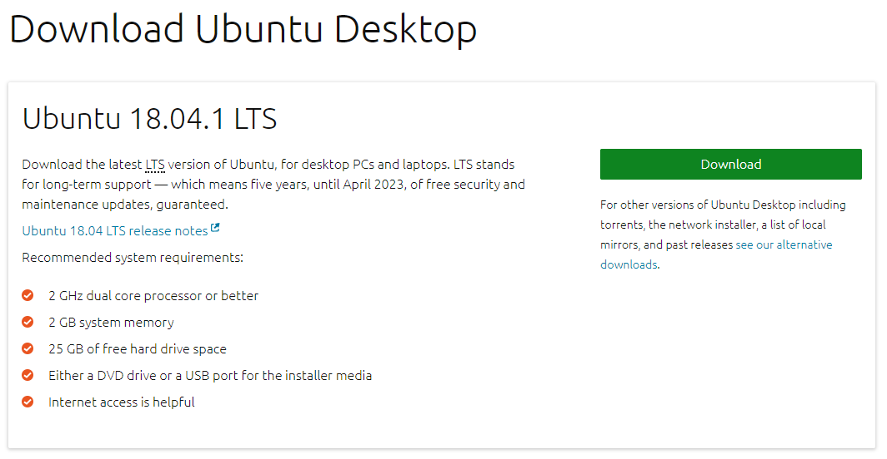
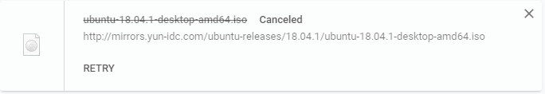
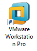
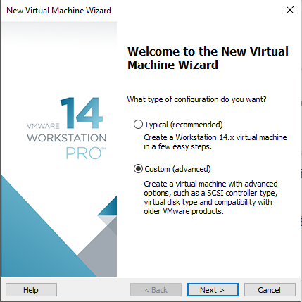
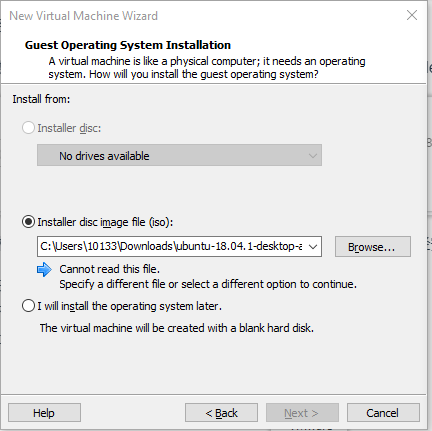
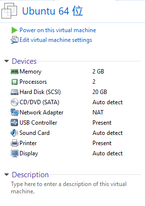
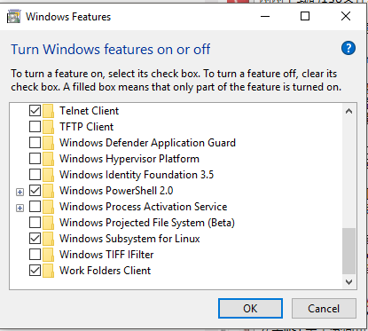

<!DOCTYPE html>
<html lang="" class="loading">
<head><meta name="generator" content="Hexo 3.8.0">
    <meta charset="UTF-8">
    <meta http-equiv="X-UA-Compatible" content="IE=edge,chrome=1">
    <meta name="viewport" content="width=device-width, minimum-scale=1.0, maximum-scale=1.0, user-scalable=no">
    <title>Endcat&#39;s Home</title>

    <meta name="apple-mobile-web-app-capable" content="yes">
    <meta name="apple-mobile-web-app-status-bar-style" content="black-translucent">
    <meta name="google" content="notranslate">
    <meta name="keywords" content="Fechin,"> 
    
    <meta name="author" content="Endcat"> 
    <link rel="alternative" href="atom.xml" title="Endcat&#39;s Home" type="application/atom+xml"> 
    <link rel="icon" href="/img/favicon.png"> 
    <link rel="stylesheet" href="//cdn.jsdelivr.net/npm/gitalk@1/dist/gitalk.css">
    <link rel="stylesheet" href="/css/diaspora.css">
</head>
</html>
<body class="loading">
    <div id="loader"></div>
    <div id="single">
    <div id="top" style="display: block;">
    <div class="bar" style="width: 0;"></div>
    <a class="icon-home image-icon" href="javascript:;"></a>
    <div title="播放/暂停" class="icon-play"></div>
    <h3 class="subtitle">Linux系统安装（VMware/WSL）</h3>
    <div class="social">
        <!--<div class="like-icon">-->
            <!--<a href="javascript:;" class="likeThis active"><span class="icon-like"></span><span class="count">76</span></a>-->
        <!--</div>-->
        <div>
            <div class="share">
                <a title="获取二维码" class="icon-scan" href="javascript:;"></a>
            </div>
            <div id="qr"></div>
        </div>
    </div>
    <div class="scrollbar"></div>
</div>
    <div class="section">
        <div class="article">
    <div class="main">
        <h1 class="title">Linux系统安装（VMware/WSL）</h1>
        <div class="stuff">
            <span>十月 24, 2018</span>
            

        </div>
        <div class="content markdown">
            <p><del>都8102年了，为什么不用用Linux呢</del></p><br><p><del>为什么我Windows用得好好的为什么没事找事要玩Linux呢？</del></p><br><p><del>真是好奇怪呀？Linux是个什么鬼东西？</del></p><br><h2 id="VMware下安装Linux虚拟机"><a href="#VMware下安装Linux虚拟机" class="headerlink" title="VMware下安装Linux虚拟机"></a>VMware下安装Linux虚拟机</h2><p><strong>Step1 下载Linux iso镜像（以Ubuntu为例）</strong></p><br><p>Google搜索Ubuntu，在官网中下载Latest Release（写这篇文章的时候是Ubuntu 18.04.1 LTS）。</p><br><br><br><p>（看到那个绿色的按钮没有？快 点 给 我 摁 下 去！）</p><br><p>下载好以后你会得到一个iso镜像文件，大概叫做ubuntu-18.04.1-desktop-amd64.iso</p><br><br><br><p>（大概就长上面这个样子，不要吐槽为什么canceled，因为我已经安装好了）</p><br><p><strong>Step2 下载和安装VMware</strong></p><br><p>接下来应该是安装VMware，所以我们应该去搜索VMware啦。<br>网上有详细的安装过程，当然软件是付费的网上也有密钥可以找。<br>（请土豪们尊重一下知识产权，购买正版软件哦<del>客套话</del>）</p><br><p><strong>Step3 安装Ubuntu</strong><br><br><br>    </p>

<p>打开VMware，在文件（File）选项卡中新建一个虚拟机（New Virtual Machine）</p>

<p></p>
<p>选择Custom(advanced)，如果是中文语言，对应选择即可。</p><br><br><br><p>一路Next到如上图情况，选择第二项安装磁盘镜像iso，并在Browse中选择你刚刚下载的iso文件。<br>到磁盘分区界面时，请选择将磁盘文件存放到单个文件。<br>基本上没有什么问题，一路Next就可以了。</p><br><br><br><p>如图是你的虚拟机设备的属性情况，当然你可以点击Edit virtual machine settings自定义设置，比如你的电脑配置足够好的话，你可以尝试更改一下内存大小，处理器数量还有硬盘大小。当然默认配置不动是完全没有问题的。</p><br><p>万事俱备，只需启动虚拟机即可（Power on this virtual machine）<br>至于具体的Ubuntu安装引导，并没有一定要注意的选项，只需要按照流程文字进行操作就可以啦！<br>任何不清楚的地方可以先百度一下，比如各种报错信息。当然你也可以在文章结尾留言给我，虽然我不一定会看（滑稽</p><br><p>后续操作，当你安装完Ubuntu虚拟机后，一般VMware会要求你安装VMware Tools。VMware Tools是方便虚拟机和实体机的操作切换和文件传输的工具，建议安装。具体的安装细节不属于这篇文章的范畴，请自行使用搜索引擎。</p><br><h2 id="Windows-Subsystem-For-Linux"><a href="#Windows-Subsystem-For-Linux" class="headerlink" title="Windows Subsystem For Linux"></a>Windows Subsystem For Linux</h2><p>安装WSL是十分简单的，首先要检查一下有没有开启Linux子系统功能。<br>在Win10环境下，打开搜索框键入Turn Windows Features on or off</p><br><br><br><p>勾选Windows Subsystem for Linux复选框，重启系统即可<br>在Microsoft Store中搜索Linux，安装喜欢的Linux版本即可。</p>
            <!--[if lt IE 9]><script>document.createElement('audio');</script><![endif]-->
            <audio id="audio" loop="1" preload="auto" controls="controls" data-autoplay="false">
                <source type="audio/mpeg" src="">
            </audio>
            
                <ul id="audio-list" style="display:none">
                    
                        <li title="0" data-url="http://link.hhtjim.com/163/5146554.mp3"></li>
                    
                        <li title="1" data-url="http://link.hhtjim.com/qq/001faIUs4M2zna.mp3"></li>
                    
                </ul>
            
        </div>
        
    <div id="gitalk-container" class="comment link" data-ae="false" data-ci="" data-cs="" data-r="" data-o="" data-a="" data-d="false">查看评论</div>


    </div>
    
        <div class="side">
            <ol class="toc"><li class="toc-item toc-level-2"><a class="toc-link" href="#VMware下安装Linux虚拟机"><span class="toc-number">1.</span> <span class="toc-text">VMware下安装Linux虚拟机</span></a></li><li class="toc-item toc-level-2"><a class="toc-link" href="#Windows-Subsystem-For-Linux"><span class="toc-number">2.</span> <span class="toc-text">Windows Subsystem For Linux</span></a></li></ol>
        </div>
    
</div>


    </div>
</div>
</body>
<script src="//cdn.jsdelivr.net/npm/gitalk@1/dist/gitalk.min.js"></script>
<script src="//lib.baomitu.com/jquery/1.8.3/jquery.min.js"></script>
<script src="/js/plugin.js"></script>
<script src="/js/diaspora.js"></script>
<link rel="stylesheet" href="/photoswipe/photoswipe.css">
<link rel="stylesheet" href="/photoswipe/default-skin/default-skin.css">
<script src="/photoswipe/photoswipe.min.js"></script>
<script src="/photoswipe/photoswipe-ui-default.min.js"></script>

<!-- Root element of PhotoSwipe. Must have class pswp. -->
<div class="pswp" tabindex="-1" role="dialog" aria-hidden="true">
    <!-- Background of PhotoSwipe. 
         It's a separate element as animating opacity is faster than rgba(). -->
    <div class="pswp__bg"></div>
    <!-- Slides wrapper with overflow:hidden. -->
    <div class="pswp__scroll-wrap">
        <!-- Container that holds slides. 
            PhotoSwipe keeps only 3 of them in the DOM to save memory.
            Don't modify these 3 pswp__item elements, data is added later on. -->
        <div class="pswp__container">
            <div class="pswp__item"></div>
            <div class="pswp__item"></div>
            <div class="pswp__item"></div>
        </div>
        <!-- Default (PhotoSwipeUI_Default) interface on top of sliding area. Can be changed. -->
        <div class="pswp__ui pswp__ui--hidden">
            <div class="pswp__top-bar">
                <!--  Controls are self-explanatory. Order can be changed. -->
                <div class="pswp__counter"></div>
                <button class="pswp__button pswp__button--close" title="Close (Esc)"></button>
                <button class="pswp__button pswp__button--share" title="Share"></button>
                <button class="pswp__button pswp__button--fs" title="Toggle fullscreen"></button>
                <button class="pswp__button pswp__button--zoom" title="Zoom in/out"></button>
                <!-- Preloader demo http://codepen.io/dimsemenov/pen/yyBWoR -->
                <!-- element will get class pswp__preloader--active when preloader is running -->
                <div class="pswp__preloader">
                    <div class="pswp__preloader__icn">
                      <div class="pswp__preloader__cut">
                        <div class="pswp__preloader__donut"></div>
                      </div>
                    </div>
                </div>
            </div>
            <div class="pswp__share-modal pswp__share-modal--hidden pswp__single-tap">
                <div class="pswp__share-tooltip"></div> 
            </div>
            <button class="pswp__button pswp__button--arrow--left" title="Previous (arrow left)">
            </button>
            <button class="pswp__button pswp__button--arrow--right" title="Next (arrow right)">
            </button>
            <div class="pswp__caption">
                <div class="pswp__caption__center"></div>
            </div>
        </div>
    </div>
</div>


</html>